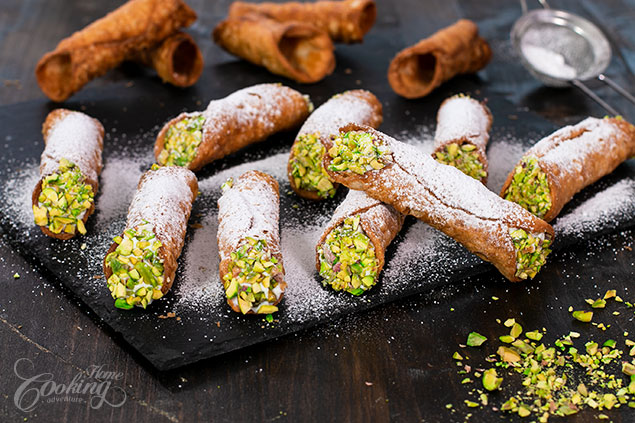

Cannoli Siciliani

Ever since I've tried cannoli for the first time in Italy I’ve been eager to try them at home. I really like to take on new cooking challenges as once fulfilled they bring me a lot of satisfaction. I kind of stay away from fried desserts but these cannoli really got my attention and I knew I have to try them out sooner or later. And I am glad I did because I simply love them. Crispy pastry tubes filled with a flavorful ricotta filling and dipped in chopped crunchy pistachios...beautiful flavor and texture combination and hardly you can stop from eating just one.
Cannoli are the kind of dessert that you can easily prepare in advance as you can prepare the shells even a week before serving. Every time fill the shells only before serving so you can enjoy the crispy texture of the shells along the smooth ricotta filling and crunchy nuts. You can always make variations to the ricotta filling, adding chocolate chips, candied fruits, different types of nuts or whatever you like best. Hope you’ll try them out and enjoy!
Prep time=30 mins + resting time || Cook time=20 mins || Total time=50 mins + resting time
Ingredients
Makes about 20-22 cannoli
Cannoli Shells
2 cups (250g) all-purpose flour
1 tbsp (15g) sugar
1/2 tsp (1g) ground cinnamon
1/4 tsp (1g) salt
2 tbsp (28g) butter, cold
1 large egg
1/3 cup (75ml) Marsala wine
For Frying
Vegetable oil (flavorless oil preferably - I used canola oil)
For egg wash
1 egg white
Ricotta Filling
25 oz (700g) ricotta cheese, drained
1/2 cup (60g) powdered sugar
Zest from 1 large lemon or orange (about 1 1/2 tsp)
For Garnish
Chopped pistachios
Powdered sugar for dusting
Directions
Prepare cannoli shell dough. In a large bowl sift flour with salt, cinnamon and sugar. Incorporate butter using a fork or a pastry blender, until crumbs are formed. Add egg and Marsala and stir until incorporated. Knead the dough for few minutes until smooth. Form the dough into a ball, wrap the dough in plastic wrap, and refrigerate for one hour. Meanwhile prepare ricotta filling. Add ricotta cheese in a sieve over a bowl to drain, for at least 30 minutes in the refrigerator. Transfer drained ricotta into a bowl, add powdered sugar and lemon/orange zest and mix gently to combine using a spatula. Refrigerate ricotta filling until ready to use. On a lightly floured surface roll the dough until 1/16 in (1-2 mm) thick. Cut 4 inch (10cm) circles and set aside. Reroll the dough and repeat until all dough is used. Heat about 2 inches of oil in a deep pot or fryer to 320-350F (160-180C). Line a baking sheet with paper towels. Slightly grease with oil the cannoli tubes. Roll each circle into a 4.5 in (12 cm) oval. Wrap the oval dough around cannoli tube, brush one edge with egg white, overlap the edges and press slightly to seal. Once oil is hot place 2 or 3 cannoli at a time and fry for about 2 minutes until golden brown, rotating to cook evenly. Lift out the cannoli shells using heatproof tongs and place on paper towels to drain excess oil. Repeat until all shells are cooked. Let cool slightly and then remove the metal tubes. Place the ricotta filling into a piping bag fitted with a larte tip and fill each cannoli shell. Dip each end in chopped pistachios and dust with powdered sugar. Enjoy! The shells can be stored unfilled in an airtight container at room temperature up to one week. It is best to fill them only before serving.
Nutrition facts
1 Serving out of 22 - Calories:104, Fat:3.6g , Saturated Fat:2.1g, Carbohydrates:12.7g, Sugar:3.3g, Fiber:0.3g, Protein:4.7g , Cholesterol:19mg, Sodium 62mg 3%, Vitamin D 1mcg 7%, Calcium 83mg 6%, Iron 1mg 4%, Potassium 55mg 1% daily percent values are based on a 2000 calorie diet